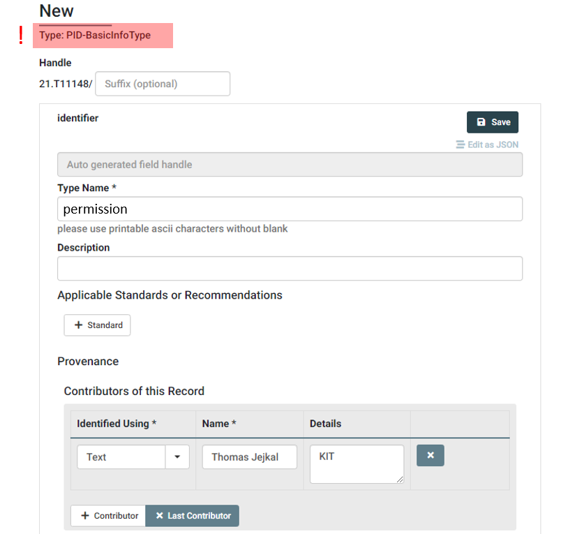
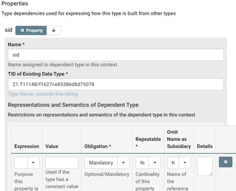

3.1 Register new Child-Data Type(s)
Coming back to our aclEntry checklist we see, that the permission Data Type is missing. We'll now register this new Data Type at our DTR instance.
| Property | DTR Inquiry Result (Reuse, Extend, Create) |
|---|---|
| sid | Reuse unicode-line-string (21.T11148/f1627ce85386d8d75078) |
| permission | Create |
In order to create Data Types at the DTR, write permissions are required. In order to receive proper permissions, you'll have to create a user account. Typically, you'll have to contact the provider of the DTR in order to request a new user account.
After logging in, you are able to create a new Data Type using the Create Dropdown Button next to the search field. Here you should select PID-BasicInfoType.

As you can see in the screenshot, we just assign a Type Name and a Contributor in the upper section of the form before we proceed to the lower part. Here we add a new Property, assign string as Data Type and add the enumeration list containing all possible values of our envisioned permission Data Type.

We may also assign a Default Value before we Save the new Data Type. As a result, the Data Type is created and gets a PID assigned. In our case, this PID is 21.T11148/1785713451d01948bc96, which we add to our checklist for the following step.
| Property | DTR Inquiry Result (Reuse, Extend, Create) |
|---|---|
| sid | Reuse unicode-line-string (21.T11148/f1627ce85386d8d75078) |
| permission | Create permission (21.T11148/1785713451d01948bc96) |
Now, we've all elements to create the aclEntry Data Type, which will be serve as single element of aclList in our modeled structure.
We create a new Data Type but this time, we select PID-InfoType at the Dropdown Button.

After adding Data Type Name and Contributor we continue with defining the properties. According to our checklist we should add two properties: sid and permission.


We assign a name, e.g., the name of the attribute in our structure. Under TID of Existing Data Type we put in the according PID from our checklist representing the respective property, e.g., 21.T11148/f1627ce85386d8d75078 for sid. Furthermore, we may add Representation and Semantics information, e.g., about obligation, repeatability or for providing a constant value. If done, we can save the aclEntry Data Type and receive a PID, in our case 21.T11148/1785713451d01948bc96, which we can now use to define the aclList in the next step.